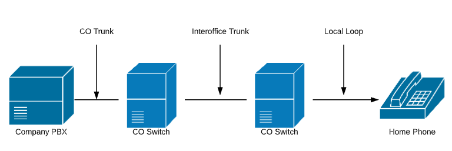
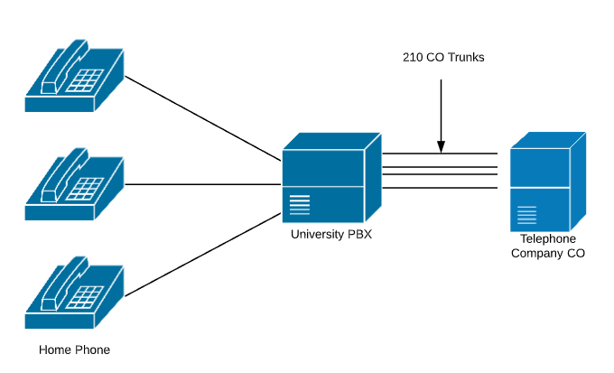

VoIP Components
| Year | Description |
|---|---|
| 1950's - 1960's | Microwave line of sight links for transmitting long distance telephone calls using analog modulation with frequency division multiplexing (very noisy) |
| 1960's | Introduction of DS1/T1 (time division multiplexing) carrier systems carrying digital voice signals, converted from analog using non-linear pulse code modulation |
| 1970's | - Introduction of linear predictive codecs to reduce digital bandwidth requirements (continued on going improvements based on advances in digital processing) - 1st Generation Multimode fiber optic cable introduced 45 Mb/s-140Mb/s bandwidth |
| 1980's | - 1st Cellular Phones (Analog System) - 2nd Generation Singlemode fiber optic cable 1.7 Gb/s bandwidth repeater spacing 50 km |
| 1981 | IPv4 Standard RFC 791 |
| 1981 | Commercial Introduction of 10Mb/s Ethernet |
| 1985 | IEEE 802.3 CSMA/CD (Based on coaxial cable) |
| 1985 | Code-Excited Prediction (CELP) a type of LPC |
| 1990's | - 2nd Generation Digital Cellular System - 3rd Generation 1.55 m lasers and dispersion shifted fiber 2.5 Gb/s repeater spacing 100 km - Late 1990's Development of H.323 and Session Initiation Protocol Standards for VoIP Signaling |
| 1995 | 100BASE-TX Ethernet |
| 1999 | 1000BASE-T Ethernet |
| 2000's | - 4th Generation Optical Amplification (erbium-doped fiber amplifier) and wavelength-division multiplexing 14Tb/s bandwidth over single fiber 60 km line - Development and Implementation of Synchronous Optical Networking (SONET) Framing Structure to carry ATM cells, IP Packets, and Ethernet frames OC-1 51 Mb/s, OC-3 155 Mb/s, OC-12 622Mb/s, OC-192 10Gb/s, OC-768 40Gb/s |
| 2004 | Commercial VoIP Service Providers Proliferate |
| 2006 | 10GBase-T Ethernet |
| 2020 | Deployment of 5G Cellular up to using multiple frequencies for bandwidth improvement and lower latency up to 10 Gbp/s |

Components of a Telephony Network
| Abreviation | Description |
|---|---|
| CO | Central Office |
| PBX | Private Branch Exchange |

University Telephone System
| Frequency | 1209 Hz | 1336 Hz | 1477 Hz |
|---|---|---|---|
| 697 Hz | 1 | 2 | 3 |
| 770 Hz | 4 | 5 | 6 |
| 852 Hz | 7 | 8 | 9 |
| 941 Hz | * | 0 | # |
| Information Signal | Description | Frequencies (Hz) |
|---|---|---|
| Dial Tone | Heard by caller after picking up the handset | 350 and 400 |
| Ring Back | Heard by caller, indicating that the called phone is ringing | 440 and 480 |
| Busy Signal | Heard by the caller, indicating that the called phone is off-hook | 480 and 620 |
| Reorder tone | Heard by the caller, indicating that the call cannot be completed | 480 and 620 |
VoIP Components